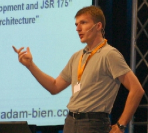

Series: Meet the Dream Team Members
(In January 2007, we announced the 11
charter members of the NetBeans
Dream
Team, a community-oriented group of highly skilled NetBeans users
devoted to promoting NetBeans and working on the NetBeans Project. In
these interviews discover who they are, why they are passionate about
NetBeans and what goals they have for the NetBeans project.)
Adam Bien
Java EE architect, developer, speaker, trainer,
author, blogger, consultant, Java champion—Adam Bien wears many hats,
including one as a member of the NetBeans Dream Team. A Java developer
since the early days of JDK 1.0, he works primarily as an independent
consultant helping companies to implement Java architecture and
applications. He has authored seven books and 50 articles about Java EE
development, and has spoken at many international conferences,
including JavaONE. He also maintains a popular blog where he
regularly shares his expertise about the Java EE framework. He is based
in Munich, Germany.
How did you get started with Java EE development?
I started with J2EE around 1999 before it was actually released. Most
of the J2EE APIs, like JNDI, Servlets, JDBC, RMI/IIOP, JMS, EJB 1.0,
were already available and I used them in projects already. The main
problem those days was the support of different versions and
API-constalations by different vendors. The application servers weren't
even similar. The introduction of J2EE was a huge improvement from the
non-functional perspective. You could at least rely on the existence of
a particular API. I started with Sun's Java Web Server (with
Applet-based administration console). My first projects were
e-commerce, distributed CORBA apps, content management systems, and I
built some Swing applications as well.
When did you discover the NetBeans IDE?
I tried NetBeans in the early days (version 3.5), but I actually didn't
like it. It looked terrible and had some strange concepts like mounting
jars, instead of just putting them into the classpath. It was not only
“my” problem; it was really hard to convince other developers to use
it. I started to use 4.0 in a project for WYSIWIG Swing-construction,
but this was long before Matisse. By NetBeans 5.0, I was using the IDE
for most of my projects. NetBeans IDE 6.0 I use almost exclusively for
my commercial and open-source work.
The huge benefit of today's NetBeans IDE is the cohesive and
well-integrated functionality. There is no need to search and download
additional plug-ins after the IDE is installed—a timesaver. NetBeans is
superb in the Java EE 5 area, and catching up everywhere else. The
editor has significantly improved. I just enjoy working with the IDE in
general. But there are some issues with incremental deployment under
Windows which will be fixed in the next version, I'm told. NetBeans
annotates the methods and not attributes in JPA objects, so I don't use
the wizard. However these are only a minor problems—nothing is perfect.
Greenfire, a project of yours, does something very cool. Tell us
about it.
Greenfire is an
open-source Java EE 5 project aimed at managing heating systems in a
convenient and efficient way. Greenfire runs in my house—it is mission
critical because winters are cold in Bavaria! I was unhappy with the
heating behavior of my home—solar energy wasn't getting as leveraged as
I expected. I use a combination of solar energy and wood to heat the
house. But before Greenfire, wood heating provided much of the heat
thus precious solar hours were lost....
Greenfire is able to control the heating remotely and provides a simple
Java API to do it. Every five minutes Greenfire checks all sensors, the
weather forecast and decides what to do. It basically sets the heating
modes: “On, Off, Summer and Auto”. At the end, it writes all decisions
and sensor data (interesting for reports) to the Java DB. Greenfire
runs on Glassfish v2 and was built with the NetBeans IDE. I saved about
10-30% in my home's primary energy consumption. My heating bill
decreased as well.
How did you use NetBeans IDE for Greenfire?
I used NetBeans for the whole process – from coding over test until
deployment. NetBeans is especially nice in that it allows me to test
and deploy the project locally and then deploy it remotely – just with
one click. You can specify the server on the EAR (right mouse click,
“run” node) and the target deployment. The well-integrated remote
debugger and profiler simplified the development further and saved time.
What is Greenfire's current status?
Greenfire has been in production for two years. It is absolutely
functional. I have to check in the remaining sources and do a bit of
refactoring too. They are already some vendors interested in it, but
I've decided to open-source it first. I wrote it initially just for my
own use, but I'm amazed at how simple it is and how well it works.
Are you an advocate of “green living”?
It is easier to justify the many nightly hacking hours if the end
result is going to be good for the environment. In my opinion, you
should always try to behave “greenly”, especially if it has only a
minor impact on your living quality and doesn't take a lot of effort.
Do you have a “green” approach as well to your work as a developer?
I try to conserve my developing energy—to get rid off superfluous
concepts, patterns and even architectures. Less is more—be lazy and
save your energy.
How did you become a Java EE speaker and trainer?
Sun asked me during the Systems Fair in Munich (around 1996) to give
some classes in the architecture and design area. I took the chance and
said “yes”. Training others is also an opportunity to learn, especially
when you have eager students with good questions. My speaking “career”
started similarly. At the first JAX conference in Germany (2001), I was
asked to deliver a session about the Apache's James Server and caching
framework. I liked it, and have enjoyed speaking at conferences ever
since.
You're also a prolific writer. Where do you find the time to write,
speak and consult?
As a consultant I travel a lot, so I write and prepare my talks during
my “dead” time, mostly on trains and planes, and in hotels. It's good
to know that your traveling time isn't totally wasted. However, coding
and real-world projects are my number one priority.
Do you have any books planned about NetBeans?
Not about, but with. I already used NetBeans to draw the UML diagrams
and sample code for the last two books. It was really efficient and the
diagrams look really slick. I don't plan to write a book about the
NetBeans IDE because there are already excellent books out
there. Besides that, there are many free articles, tutorials, screencasts
that provide useful information too.
Is it true that you're the top expert in Java EE?
I've been using J2EE / Java EE 5 from the beginning, and there are
still things I don't know. It can be dangerous to consider yourself an
expert, then you stop learning and your knowledge becomes worthless
within a few years. I would rather call myself a really passionate
power user.
How would you make the NetBeans IDE eco-friendly?
Here's an easy first step: change the coloring schemes to black. A
black screen saves energy.
More Dream Team Profiles
Emilian
Bold
Vincent
Brabant
Wade
Chandler
Fabrizio
Giudici
Joerg
Plewe
Vinicius
Senger
Edgar
Silva
Ibon
Urrutia